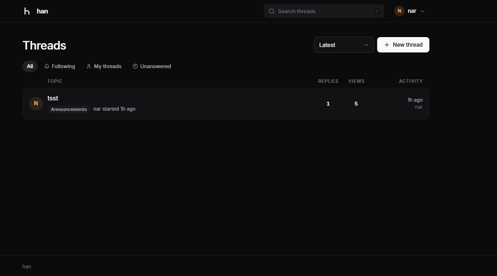

Thoughtful discussions
Organize conversations into categories, write with Markdown, and find threads with full-text search and useful filters.
Han is a lightweight discussion forum that gives your community the tools to connect, share ideas, and keep conversations flowing.
Built with PHP 8.1+ and MySQL / MariaDB

Made for communities
A focused forum experience with the everyday tools your community needs, without a pile of extra dependencies.
Organize conversations into categories, write with Markdown, and find threads with full-text search and useful filters.
Follow threads, keep track of unread activity, and get notifications when a conversation moves forward.
Use the built-in admin tools to manage members, categories, moderation, and community settings.
Self-host with Docker or a standard PHP setup. Your discussions stay on infrastructure you control.
Get started
Explore the setup guide, then launch locally with Docker Compose.